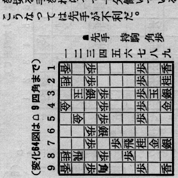

〜2012年6月上旬〜
例によって Upgrading Fedora using yumに従って進める。
% sudo yum update yum % sudo yum clean all % sudo rpm --import https://fedoraproject.org/static/1ACA3465.txt % sudo yum --releasever=17 distro-sync
boost-serializationがcompizで依存エラーを起こした。使ってないので
% sudo yum remove boost-serialization
で削除。再度distro-sync
% sudo yum --releasever=17 distro-sync ERROR You need to update rpm to handle: rpmlib(X-CheckUnifiedSystemdir) is needed by setup-2.8.48-1.fc17.noarch rpmlib(X-CheckUnifiedSystemdir) is needed by filesystem-3-2.fc17.i686 RPM needs to be updated
で止まった。ぐぐってみるとdracutしてないからということらしい。
4.3 Fedora 16 -> Fedora 17は読んだけど、関係ないと思って読み飛ばしてた。
なんかファイルシステムが大幅に変わるんだな。/binや/libがシンボリックリンクになるとは。
% sudo dracut -H --force --add convertfs % sudo vi /etc/grub.conf rhgb quietを削除、roをrwに、rd.info rd.convertfs enforcing=0を追加
で再起動。dmesg | grep dracutして確認。grub.confを元に戻して再度distro-sync。
これですべてうまくいった。
Fedoraをアップグレードしたらまず確認するのがdovecotというのがお約束になってしまった。
今回もまた設定が変わったようでThunderbirdからアクセスできないとメッセージが。
/var/log/maillogを見ると
dovecot: imap(eban): Error: user eban: Initialization failed: namespace configuration error: inbox=yes namespace missing
と出てる。namespaceか。/etc/dovecot/conf.d/*.rpmnewを確認すると10-mail.conf.rpmnewの
namespace inbox {
inbox = yes
}
が非常に怪しい。これを追加したらいけた。
前回はまったaddress = localhostという記述はなくなっていた。
さすがにPOPとかIMAP serverでlocalhostだけ許すという初期値はないよな。
Google Readerで不満なのはLDRでのsがないこと。N+OでいけるがShiftも押さなきゃいけない。
そこでsのためだけに
Google Reader Key Customizeを入れた。
そこだけ取り出せばいいのかもしれないがまあいいか。
どうせ遅いだろうとかサイズが大きくなって扱いづらいとか思って、
600dpiではほとんどスキャンしてなかったけど、
いろいろぐぐってみると白黒にするとサイズ的もリーズナブルになっていいらしい。
というわけで試してみたが、さすがに遅い。音がいつもと違う。
結果はたしかになかなかいい。閾値は0にしたんだけど、これって自動でやってくれてるんだろうな。
けっこう赤茶けた感じの本で試したが、あまりノイズもない。
サイズを150dpi相当に縮小してグレー化してみたら結構きれい。
スキャン速度を考えると300dpiで白黒ってのも試してみると面白いかもしれない。
昨日の続きで300dpiだとスキャンも速いのでできればこのくらいでいきたいが、
Calibreでepubに変換するとデフォルトでは8bit grayscaleになってしまうようだ。
縮小もはいるのでガタガタにはならない。というか結構きれい。
Sony Readerで見てもいい感じ。
面白いことに二値データは2倍以上の差があるが、8bitグレー化すると同じようなサイズになってしまう。
% ls -o kakutoufu-sempou*/ka* -rw-rw-r-- 1 eban 19942244 2012-06-05 23:47:46 kakutoufu-sempou-600 (8)/kakutoufu-sempou-600 - Fumei.cbz -rw-rw-r-- 1 eban 15624951 2012-06-05 23:56:18 kakutoufu-sempou-600 (8)/kakutoufu-sempou-600 - Fumei.epub -rw-rw-r-- 1 eban 8011021 2012-06-06 00:23:32 kakutoufu-sempou-300 (9)/kakutoufu-sempou-300 - Fumei.cbz -rw-rw-r-- 1 eban 14406211 2012-06-06 00:24:40 kakutoufu-sempou-300 (9)/kakutoufu-sempou-300 - Fumei.epub
漫画でも試してみよう。
以前は上げるたびにOFFにするのがうっとうしいなと思っていたsmooth scrollの設定だが、
これちゃんと保持するようになってたんだな。
今回なぜかまたONになるようになったが何のいやがらせか。
設定-詳細-一般-スムーススクロール機能を使用するをuncheck。
Flashがポップアップしてるのでボタン押せばいいんだけど、どうしても押せない。なぜか反応しない。
"Ubuntu firefox flash local storage"でぐぐっていろいろ辿ってみたら、
Flashの設定マネージャーでいじれるとのこと。早速res.nimg.jpを削除してみたら、
ニコ動プレーヤーの設定が全部消えたが再生できた。
まあ、大した設定じゃないので問題なし。
また増えるかもしれないので、1MBにしとく。
-thresholdだと数値を指定しないといけない。
そこで-type grayscale -depth 1とすればうまいこと二値化できるんじゃないかと実験してみたが、
例のサイズを変えないとなぜか8-bit grayscaleになってしまう件がここで問題になる。
しかたないのでpngじゃなくてpbmへ変換することにした。
こうするとオプションの-type grayscale -depth 1も必要なくなる。
つまり
% convert foo.png foo.pbm
とするだけだ。もう一回
% convert foo.pbm foo-bin.png
とでもすれば1-bit grayscaleのpngになる。まとめて
% convert foo.png PBM:- | convert - foo-bin.png
でもいいか。
結構いい感じに二値化できている。

Firefox 13.0との相性が悪い。Gmailでリンクをふつうに左クリックすると、新たなタブで
jar:file:///usr/lib/firefox/omni.ja!/chrome/browser/content/browser/newtab/newTab.xul
というURLを開こうとするが、何も表示しない。どうしたもんかな。
左クリックじゃなくて右クリックでコンテキストメニューを出して
新たなタブで開くとすれば一応開けるので致命的ではないが、
たいていは後の祭りでメール閉じちゃった後なのでなんだっけかなとなりがち。
情報が残ってないしな。
ロード済みタブ数の上限を0にしたらなぜかうまくいった。まあ、これでいいか。
青いボタンが初めて機能した。
というかクイックメニューにしてると始めるには青いボタンを押すしかないような。
300dpiのグレー、出力PDFでやってみたけど、なんかやけに速い。びっくりした。
その後120ページぐらいになったらがくんと速度が落ちた。びっくりするぐらい。
ちゃんとスキャンはしてるようだけど、なんなのこれ？
それとスキャンが終わっても圧縮がまだ終わらないんだな。eeepcじゃ力不足か。
できあがりは全体的に薄いな。そういえば輝度とかコントラストをいじってない。
あれ、どこにあったかな。
総スキャン枚数は70,000を越えていた。パッドを交換しないといけない枚数50,000を軽く越えてるが、
パッドってなんだ。取説読まないと。
読んでみたら輝度とかの説明がない。あれ、設定できないのか。
なんか意外だな。
amazonでパッドユニットとピックローラユニットに値段を調べた。
2000円近くとか5000円以上とかこれも結構するねえ。
まだ特に変なことになってるわけでもないので、もうちょっと様子見。